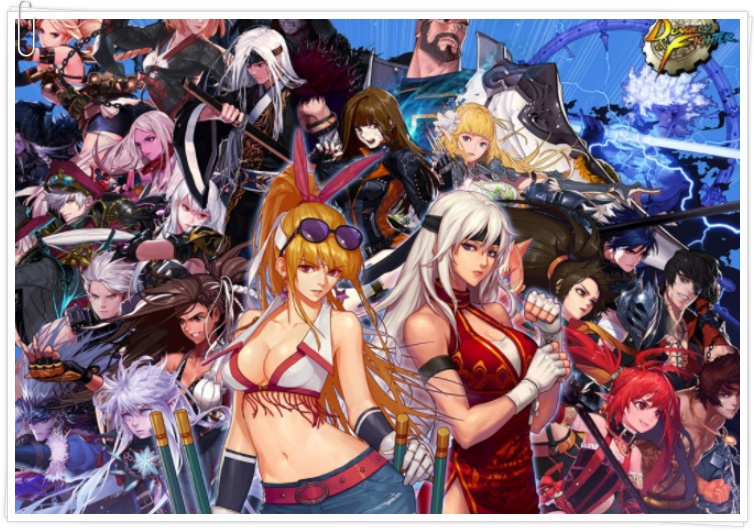
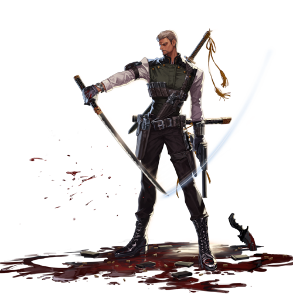
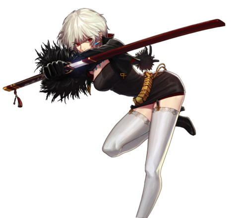
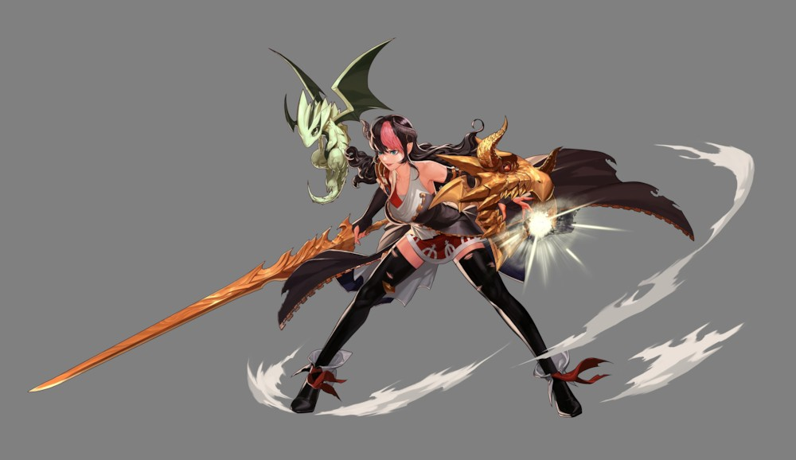
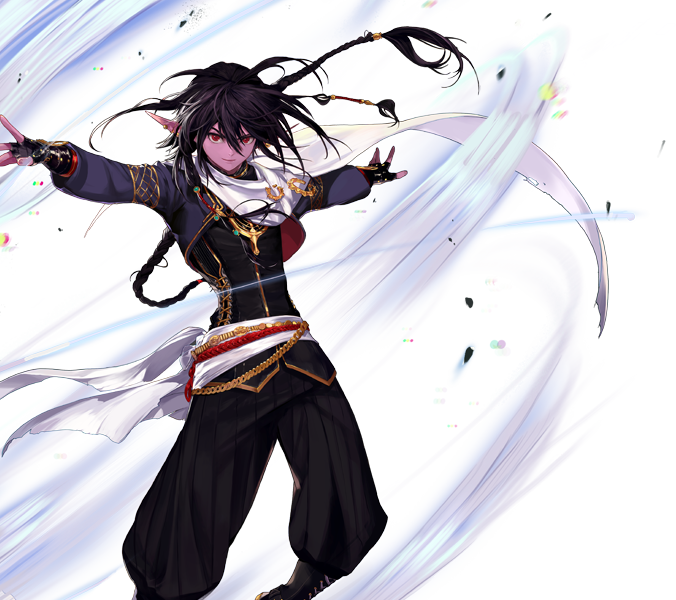
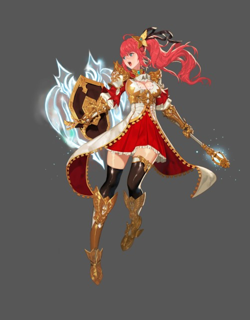
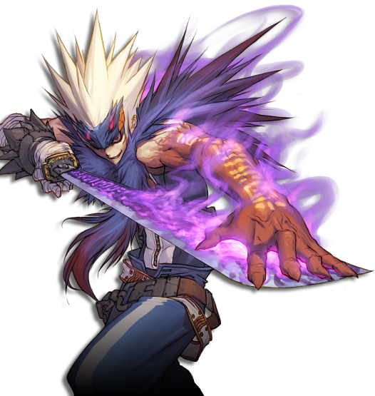
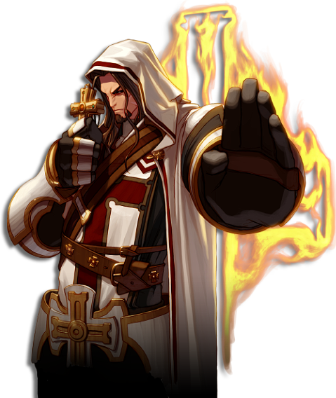
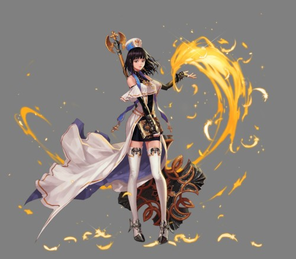

던전앤파이터에는 무려 59개의 직업이 당신을 기다리고 있죠

하지만 59개의 직업중 하나를 딱! 고른다는 것이 쉬운 일이 아니죠
직업선택에 도움이 될만한 추천 캐릭터! 도움이 되면 좋겠네요
퓨어 딜러

요원
현존 최강 물리 퓨어 딜러
물리 무속성 퍼센트 데미지 딜러
난이도 : 보통
기관에 소속된 요원으로 암살과 정보조작이라는 컨셉을 가졌으며,
절도 있는 검술과 사격술이 특징이며 온갖 자동타겟팅 기술을 가지고 있으며
수많은 무적기와 원거리 근거리 모두 커버 가능한 안정성을 가지고 있다
높은 계수로 인해 적은 투자로 많은 이익을 볼 수 있지만 아이템 가격이 비싸 초보자가
하기에는 자본이 많이 들 수 있다

소드 마스터
세계를 빛낸 3명의 물리 딜러중 한명
폭딜, 지속딜, 순간딜 모두 완벽한 직업
물리 다속성 퍼센트 데미지 딜러
난이도 : 어려움
속성변환이라는 소드마스터의 스킬을 발동시 화속성, 수속성, 명속성, 암속성 중 한 속성을 선택하여 해당 속성을 지닌 마검으로 무기를 변환시켜 평타와 승천검에는 추가 공격을,
이 둘을 제외한 스킬 공격시 일정 확률로 해당
속성의 마검 발현으로 데미지를 주는 소드마스터의 상징과도 같은 기술이다
크리티컬 확률도 높고 상황에 따라 무기, 속성을 변환하여 싸우기 때문에 쾌적한 플레이가 가능하지만 다양하게 바꿔서 플레이 해야하는만큼 캐릭터의 숙련도를 요구한다

드래곤 나이트
고뎀러의 희망이자 빛
물리 무속성 고정 데미지 딜러
난이도 : 보통
지상과 공중 모션이 둘다 있거나 모션 자체가 달라지거나 스킬 구조 자체가 변하는 스킬이 있다.
그리고 빗자루와 수류탄으로 애매하게 공중에 뜨는 캐릭과 다르게 꽤 긴 시간동안 고공체류가 가능하다.
몹몰이, 홀딩, 무적기에 상황에 따라 설치도 가능하며 범위도 상당히 넓다. 이때문에 육성성할때는 매우 쾌적하게 할 수 있고 파티원들에게 선호되는 직업중
한 개 이다
그러나 이 스킬들을 콤보로 상황에 따라 연사해야 한다는 점에서 난이도를 요구하는 캐릭터이지만 범위가 넓고 많은 무적판정 때문에 순서대로만 해줘도 1인분은 거뜬히 한다
시너지

스위프트 마스터
던파에서 최강의 속도를 자랑하는 직업
물리 무속성 퍼센트 데미지 시너지
난이도 : 쉬움
던파내에서 가장 넓은 범위와 속도를 가지고 있다
던파에 있는 모든 캐릭터 중에서 가장 사냥 속도가 빠르다
지속적인 버프로 파티에서 어느 정도의 역할도 수행하고, 스킬 공격력 증가라는 좋은 시너지를 가지고 있다
이 외에도 광부가 짱이다
초보자가 쉽게 접근할 수 있고 어느정도 밸런스도 좋은 귀족
직업이다

팔라딘
던파 유일무이 탱킹형 시너지
물리 무속성 퍼센트 데미지 시너지
난이도 : 쉬움
던파내에서 아주 드물게 탱킹 스킬을 가지고 있다
방패를 세우면 들오오는 데미지가 크게 감소하고 앞에오는 적은 그냥 막아버린다
이 때문에 초반에는 던전이 딜로 눌러버리면 그만이었는데
가면 갈수록 몬스터의 무적시간이 길어지고 데미지도 올라가니 방어해주는 팔라딘의 선호도가 크게 올라가고 있다
심지어 방어를 한다고 해서
데미지가 안나오는 것도 아니다
사냥도 무난한 편이라 현재 손꼽히는 완벽한 직업 중 한 개

소울 브링어
제작자의 사랑을 한 몸에 받은 던파의 산 증인
마법 암속성 퍼센트 데미지 시너지
난이도 : 어려움
얘는 설명하기 간단하다
세인트가 가지고 있는 패시브를 제외하고 모든 것을 다 가지고 있다
몸이 약한 대신에 일정 확률로 무적이라는 무시무시한 패시브, 홀딩에 대부분의 스킬은 설치형 장판기다
데미지도 왠만한 퓨어딜러만큼 나온다
역대급으로 좋은 희대의 사기캐지만 움직이면서 싸워야 한다는 점에서
초보자에게 난이도를 요구한다
버퍼

크루세이더(남)
세인트
강력한 버프로 파티원을 보조해주는 성직자
마법 명속성 고정 데미지 버퍼
난이도 : 보통
파티원의 방어력이나 공격력을 올려주거나 아군 치료 및 부활 등 아군에게 이로운 효과를 주면서 던전을 빨리 클리어하도록 돕는다
같은 포지션에 있는 크루세이더(여)[세라핌]에 비해서 더욱 강력하고 지속 시간이 긴 버프를 사용하며 때론 전투에도 참여할 수 있다
이렇게 좋은 점이 많고 파티의 선호가 아닌 필수적인 존재로써 인구
수가 굉장히 많다
근데 막상 찾으면 더럽게 안 온다

크루세이더(여)
세라핌
>다양한 버프로 파티원을 보조해주는 성직자
마법 명속성 고정 데미지 버퍼
난이도 : 쉬움
맡은 역할은 세인트와 같은 위치로 세라핌 역시 빠른 던전 클리어에 도움을 준다
크루세이더(남)[세인트]에 비해서는 유틸성이 높은 버프를 가지고 있다
세인트는 아군의 능력치를 많이 올려주는 반면에 세라핌은 아군의 이동속도를 올려주거나 아군에게
무적버프를 주어 큰 데미지를 막거나 몬스터를 모으고 홀딩해 세인트와는
또다른 매력을 가지고 있다
세라핌은 세인트보다 늦게 출시됬음에도 불구하고 가장 인구수가 많다
근데 최근 세인트보다 약하다는 버프력 논란 때문에 찾는 일이 줄어들었다